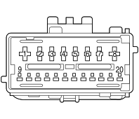

D020C DASHBOARD/REAR COUPLING (DASHBOARD)
- Path
- Electrical equipment > 3 CONNECTORS > D INTERMEDIATE COUPLINGS > D020 DASHBOARD/REAR COUPLING > D020C DASHBOARD/REAR COUPLING (DASHBOARD)
- Kind
- connector pinout (pin -> wire colour -> other end)
- Applies to
- engines: 2.0 16V JTD, 2.2 16V JTD; all production periods; only with equipment: MY 2005
- Interactive page
- https://sloeber94.github.io/elrnDB-fUlss/en/#/179009753
Applies to: engines: 2.0 16V JTD, 2.2 16V JTD; all production periods; only with equipment: MY 2005

Wiring | Colour |
|---|---|
GIALLO (yellow) |
Pin | Cable | Destination | |||
|---|---|---|---|---|---|
Sec.. | Colour | Node | Connect. | Pin | |
1 | 0,5 | 8410B | 1 | ||
2 | 1 | 8410A#A | 3 | ||
3 | 1 | 8450# | 4 | ||
4 | 1 | 8451# | 8 | ||
6 | 0,5 | 8087 | 7 | ||
7 | 1 | 8411A#A | 7 | ||
8 | 0,5 | 8411B | 2 | ||
11 | 0,5 | 8086 | 6 | ||
12 | 0,5 | 8085 | 13 | ||
13 | 0,5 | 9000 | X | 2 | |
See M093D STEERING WHEEL NODE CONTROL UNIT (NVO) (DASHBOARD) | 2 | ||||
17 | 0,5 | 9001 | X | 5 | |
See M093D STEERING WHEEL NODE CONTROL UNIT (NVO) (DASHBOARD) | 1 | ||||
19 | 0,5 | BECV | 5 | ||